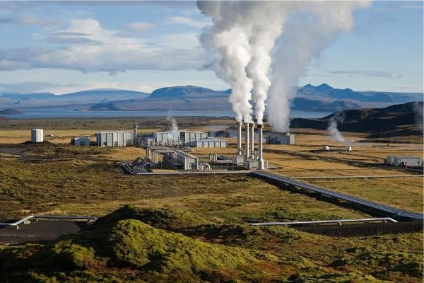

Energia Geotérmica: A Energia da Terra
Benefícios da Energia Geotérmica
A energia geotérmica é uma fonte limpa e confiável que utiliza o calor natural do interior da Terra para gerar eletricidade e aquecer ambientes. Confira seus principais benefícios:
- Fonte Renovável: O calor da Terra é uma fonte praticamente inesgotável.
- Disponibilidade Constante: Pode ser gerada 24 horas por dia, independentemente de condições climáticas.
- Baixo Impacto Ambiental: Em comparação com fontes fósseis, gera muito menos emissões de carbono.
- Versatilidade: Pode ser usada tanto para gerar eletricidade quanto para sistemas de aquecimento e resfriamento.
Como Funciona a Energia Geotérmica?
A energia geotérmica é gerada aproveitando o calor armazenado abaixo da superfície terrestre. O processo funciona assim:
- Extração de Calor: Poços profundos são perfurados para acessar reservatórios de água quente ou vapor.
- Conversão de Energia: O calor é utilizado para movimentar turbinas e gerar eletricidade.
- Reinjeção: A água utilizada é devolvida ao solo, garantindo a sustentabilidade do processo.
Por que Investir em Energia Geotérmica?
Investir em energia geotérmica é uma escolha estratégica para quem busca sustentabilidade e eficiência. Veja os motivos:
- Economia a Longo Prazo: Apesar do custo inicial elevado, oferece economia significativa em contas de energia.
- Impacto Positivo no Meio Ambiente: Reduz drasticamente as emissões de gases de efeito estufa.
- Estabilidade Energética: Garantia de fornecimento constante, sem dependência de fatores externos.
- Incentivos Governamentais: Muitos países oferecem subsídios e isenções fiscais para projetos de energia renovável.
Sustentabilidade e Energia Geotérmica
A energia geotérmica desempenha um papel vital na transição global para fontes de energia renováveis. Por ser limpa, sustentável e de impacto ambiental reduzido, é uma das melhores opções para reduzir nossa dependência de combustíveis fósseis.
Além disso, as instalações geotérmicas ocupam menos espaço do que outras fontes renováveis, como solar e eólica, tornando-as ideais para áreas com alta densidade populacional.
Entre em Contato
Interessado em saber mais sobre energia geotérmica? Entre em contato conosco para obter mais informações e descobrir como implementar essa solução!